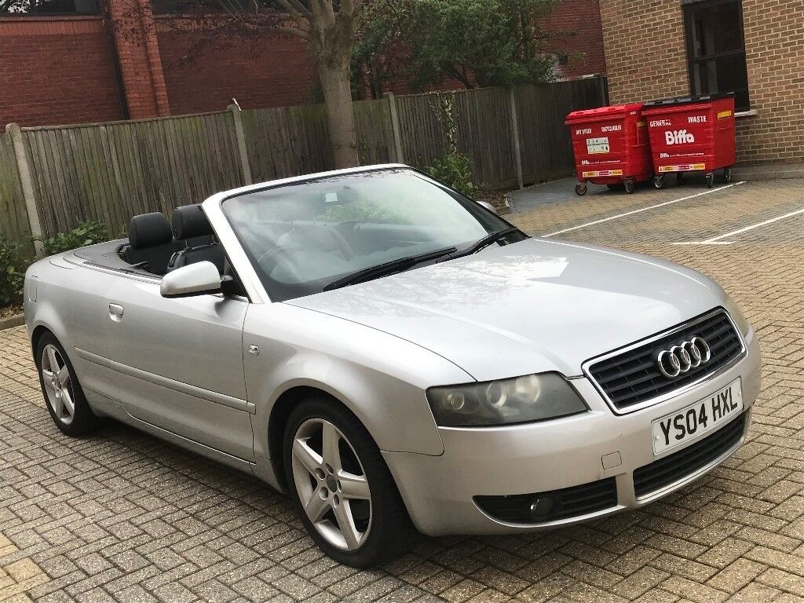

Audi A4 Cabrio
Das Audi A4 Cabriolet aus dem Jahr 2004 war ein elegantes und sportliches Fahrzeug, das Fahrspaß und offenes Fahrvergnügen bot. Mit seinem stilvollen Design und dem elektrisch betätigten Stoffverdeck war es ein Blickfang auf der Straße. Das A4 Cabriolet verfügte über eine Auswahl an leistungsstarken Benzin- und Dieselmotoren, darunter der 1,8-Liter-Turbo mit 163 PS, 2,5 Liter mit 180 Ps und der 3,0-Liter-V6 mit 220 PS. Mit seinem agilen Fahrwerk und präziser Lenkung bot es ein dynamisches Fahrerlebnis. Im Innenraum beeindruckte das A4 Cabriolet mit hochwertigen Materialien, bequemen Sitzen und moderner Technologie. Insgesamt war das A4 Cabriolet von 2004 eine gelungene Kombination aus Stil, Leistung und Offenheit.
